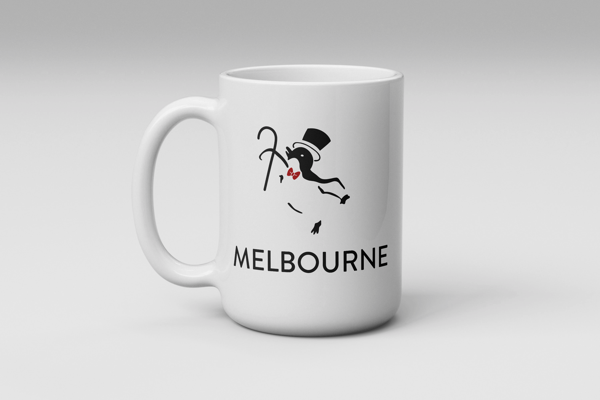

Melbourne Logo and Pictograms
Melbourne is a city located in Australia. It is known for its vibrant art scene and beautiful architecture. Melbourne hosts many art and musical events along with sport events. If you visit Phillip Island or the beaches, you could get a glimpse of the Eudyptula Minor or Little Penguins.
Challenge / Content
I began researching more about Melbourne and what the city is known for. After jotting down my thoughts and notes, I begin to do a lot of sketching for potential logo designs.
Process / Insight
After choosing three of the most impactful sketches, I refine them and present them for a critique to decide the final design.
Solution
From the feedback in the critique, I work on polishing the design and adding color.
